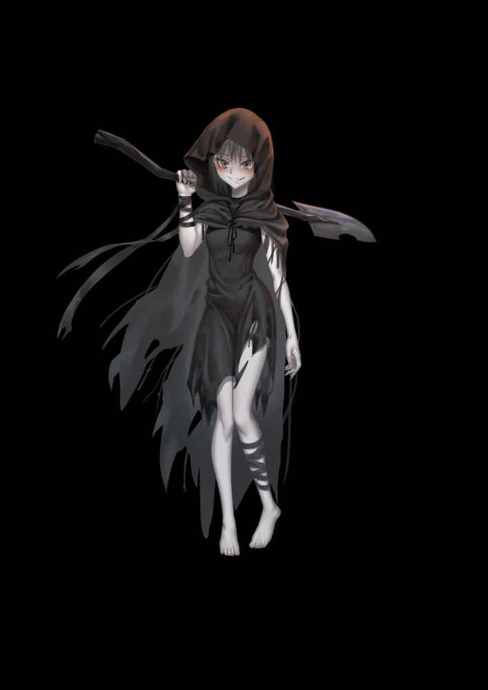
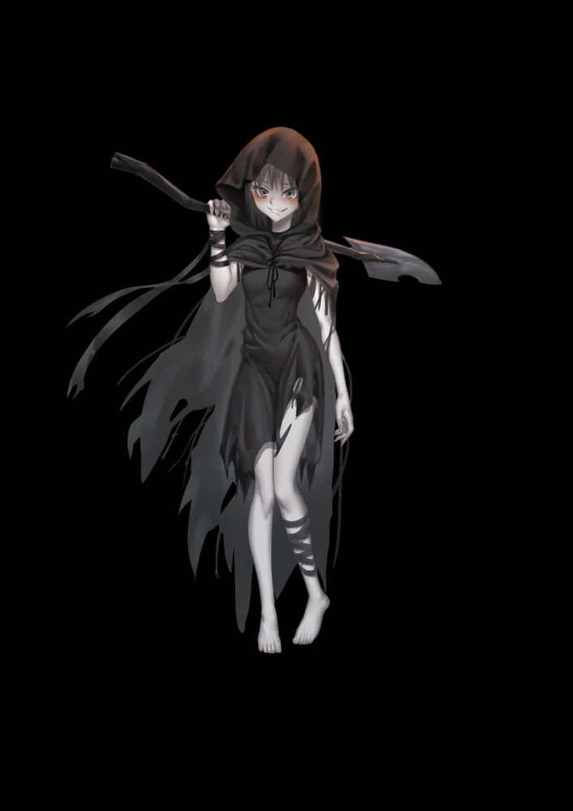

人设图

╰(*°▽°*)╯花了300大洋给赛拉整了个人设图，大伙看看效果怎么样，虽然有个血月背景，但是不代表小赛就是血月衰亡的啦，这只是一个意境，如果效果还可以的话，到时候我再跟画师掰一掰多整几个人设图出来。记得看前面一章纯洁真理（2）哦，怕大家没看到更新只看到人设图了。
记得看前面的纯洁真理（2）哦，更新的一章，不要只顾着看人设图了哦
╰(*°▽°*)╯花了300大洋给赛拉整了个人设图，大伙看看效果怎么样，虽然有个血月背景，但是不代表小赛就是血月衰亡的啦，这只是一个意境，如果效果还可以的话，到时候我再跟画师掰一掰多整几个人设图出来。记得看前面一章纯洁真理（2）哦，怕大家没看到更新只看到人设图了。
记得看前面的纯洁真理（2）哦，更新的一章，不要只顾着看人设图了哦